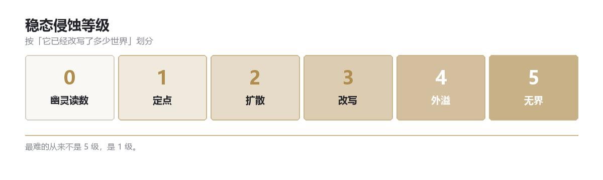

总览 · 收容分级
收容分级
稳态侵蚀等级 0–5 · 第二轴：认知状态
一、稳态侵蚀等级
GACC 只用一套尺子衡量异常：它已经改写了多少世界。不是它有多危险，也不是我们关不关得住。

| 等级 | 名称 | 判定标准 | 典型处置 |
|---|---|---|---|
| 0 | 幽灵读数 | 只出现在仪器里，无法复核，不接触现实 | 归档，不处置 |
| 1 | 定点 | 作用锁在固定空间或物件内，不移动、不增长 | 封存 |
| 2 | 扩散 | 会沿接触、视线、声音等媒介向外蔓延，速度可测 | 划隔离带 |
| 3 | 改写 | 在影响范围内修改规则（重力、时间、生死），范围随暴露时间扩大 | 清场、压制 |
| 4 | 外溢 | 能主动突破隔离，跨区域生效，每次接触都留下不可逆的痕迹 | 全域响应 |
| 5 | 无界 | 无法界定边界、无法测量、无法描述；描述本身会成为它的一部分 | 只归档，不接触 |
这套尺子最反直觉的地方：一件炸不掉的东西可能只是 1 级，因为它安静地待在柜子里；一句谁都记不住的短句可能是 5 级，因为它已经在改写「描述」这件事本身。
二、第二轴：认知状态
| 状态 | 含义 | 对行动的影响 |
|---|---|---|
| 已知 | 机制清楚，能预测 | 按规程处置 |
| 存疑 | 有模型，但预测经常失败 | 加倍冗余，禁止单人接触 |
| 未知 | 连「它是否活着」都无法回答 | 只观察，不接触；接触需伦理委员会批准 |
两轴合写，例如 3-存疑、1-未知。
最难写的不是 5 级，是 1-未知：不增长、不杀人，而我们完全不知道为什么。